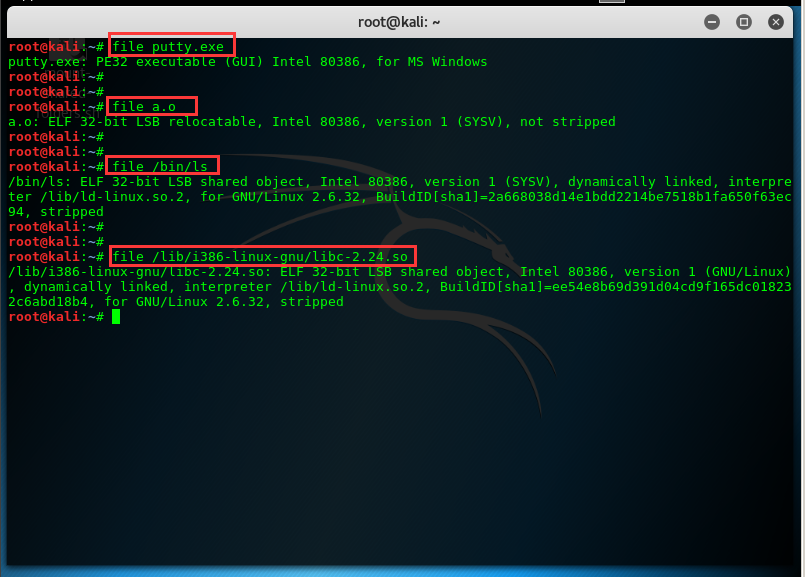
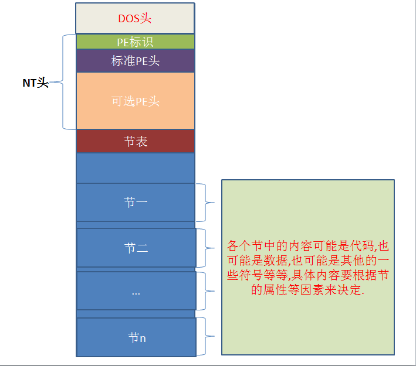

# win32 下的 PE 文件:
PE 是 Portable Execute 的缩写，是可移植可执行的意思，只要文件的数据结构遵循 PE 结构，就属于 PE 文件，windows 中常见的 PE 文件有
*.sys 驱动类文件
*.dll 动态链接库文件
*.exe 可执行文件
*.ocx 对象类别扩充组建
*.obj 目标文件等.
同样，linux 中使用的是 ELF 格式，和 windows 的 PE 格式有一定的差别，如:
可重定位文件 *.o
可执行文件如 /bin/ls 等
共享目标文件 *.so
核心转储文件 core
都遵循 ELF 数据结构。 unix 从 system v4 开始也使用 ELF 了，而他们的始祖都是 unix system v3 的中 COFF. 如下图:

# PE 文件结构
源自看雪论坛

win32 中 PE 的逻辑图:
一个标准的 PE 文件由 DOS 头，stub,NT 头 (包含 PE 标识，标准 PE 头和可选 PE 头三个成员), 节表，节的内容以及一些为了内存对齐而填充的 0.

# DOS 头
DOS 头就是一堆数据，但它们是一个有序的有含义的组合在一起的结构体。
DOS 头是为了兼容 DOS 程序而设的，现在基本已经用不上了，仅有两个有意义的字段，所以还是很简单的。
DOS 头对应的结构体名称叫 IMAGE_DOS_HEADER
0x00 WORD e_magic * //"MZ 标记" 用于判断是否为可执行文件 | |
0x3C DWORD e_lfanew; * //PE 头相对于文件的偏移，用于定位 PE 文件 |
# win32 中 PE 的 NT 头
NT 头是 PE 文件中标准 PE 头和可选 PE 头的总体称谓，还包含一个 PE 标识。下面是它在 Visual C++ 6.0 中 WINNT.h 中的定义:
typedef struct _IMAGE_NT_HEADERS64 { | |
DWORD Signature; | |
IMAGE_FILE_HEADER FileHeader; | |
IMAGE_OPTIONAL_HEADER64 OptionalHeader; | |
} IMAGE_NT_HEADERS64, *PIMAGE_NT_HEADERS64; | |
typedef struct _IMAGE_NT_HEADERS { | |
DWORD Signature; //PE 标识 | |
IMAGE_FILE_HEADER FileHeader; // 标准 PE 头 (也称文件头) | |
IMAGE_OPTIONAL_HEADER32 OptionalHeader; // 可选 PE 头 | |
} IMAGE_NT_HEADERS32, *PIMAGE_NT_HEADERS32; |
第一个是 64bit 的 NT 头定义，第二个是 32bit 的。这里只探讨 32bit 的。标准 PE 头也叫文件头，这不重要，知道是那么个东西就行了，高端名词主要是为了严谨而取出来的，但是很多时候很晦涩，通俗易懂更易让人接受.
# 标准 PE 头
这些内容源自滴水的课件
0x00 WORD Machine; * // 程序运行的 CPU 型号：0x0 任何处理器 / 0x14C 386 及后续处理器 | |
0x02 WORD NumberOfSections; * // 文件中存在的节的总数，如果要新增节或者合并节 就要修改这个值. | |
0x04 DWORD TimeDateStamp; * // 时间戳：文件的创建时间 (和操作系统的创建时间无关)，编译器填写的. | |
0x08 DWORD PointerToSymbolTable; | |
0x0C DWORD NumberOfSymbols; | |
0x10 WORD SizeOfOptionalHeader; * // 可选 PE 头的大小，32 位 PE 文件默认 E0h 64 位 PE 文件默认为 F0h 大小可以自定义. | |
0x12 WORD Characteristics; * // 每个位有不同的含义，可执行文件值为 10F 即 0 1 2 3 8 位置 1 |
# 可选 PE 头
WORD Magic; * // 说明文件类型：10B 32 位下的 PE 文件 20B 64 位下的 PE 文件 | |
BYTE MajorLinkerVersion; | |
BYTE MinorLinkerVersion; | |
DWORD SizeOfCode;* // 所有代码节的和，必须是 FileAlignment 的整数倍 编译器填的 没用 | |
DWORD SizeOfInitializedData;* // 已初始化数据大小的和，必须是 FileAlignment 的整数倍 编译器填的 没用 | |
DWORD SizeOfUninitializedData;* // 未初始化数据大小的和，必须是 FileAlignment 的整数倍 编译器填的 没用 | |
DWORD AddressOfEntryPoint;* // 程序入口 | |
DWORD BaseOfCode;* // 代码开始的基址，编译器填的 没用 | |
DWORD BaseOfData;* // 数据开始的基址，编译器填的 没用 | |
DWORD ImageBase;* // 内存镜像基址 | |
DWORD SectionAlignment;* // 内存对齐 | |
DWORD FileAlignment;* // 文件对齐 | |
WORD MajorOperatingSystemVersion; | |
WORD MinorOperatingSystemVersion; | |
WORD MajorImageVersion; | |
WORD MinorImageVersion; | |
WORD MajorSubsystemVersion; | |
WORD MinorSubsystemVersion; | |
DWORD Win32VersionValue; | |
DWORD SizeOfImage;* // 内存中整个 PE 文件的映射的尺寸，可以比实际的值大，但必须是 SectionAlignment 的整数倍 | |
DWORD SizeOfHeaders;* // 所有头 + 节表按照文件对齐后的大小，否则加载会出错。一定是文件对齐的整数倍 | |
DWORD CheckSum;* // 校验和，一些系统文件有要求。用来判断文件是否被修改. | |
WORD Subsystem; | |
WORD DllCharacteristics; | |
DWORD SizeOfStackReserve;* // 初始化时保留的堆栈大小 | |
DWORD SizeOfStackCommit;* // 初始化时实际提交的大小 | |
DWORD SizeOfHeapReserve;* // 初始化时保留的堆大小 | |
DWORD SizeOfHeapCommit;* // 初始化时实践提交的大小 | |
DWORD LoaderFlags; | |
DWORD NumberOfRvaAndSizes;* // 目录项数目 |
# 节表（区段，节区，节段等等）
#define IMAGE_SIZEOF_SHORT_NAME 8 | |
typedef struct _IMAGE_SECTION_HEADER { | |
0x00 BYTE Name[IMAGE_SIZEOF_SHORT_NAME]; | |
union { | |
0x08 DWORD PhysicalAddress; | |
0x08 DWORD VirtualSize; | |
} Misc; | |
0x0c DWORD VirtualAddress; | |
0x10 DWORD SizeOfRawData; | |
0x14 DWORD PointerToRawData; | |
0x18 DWORD PointerToRelocations; | |
0x1c DWORD PointerToLinenumbers; | |
0x20 WORD NumberOfRelocations; | |
0x22 WORD NumberOfLinenumbers; | |
0x24 DWORD Characteristics; | |
}; |
1、 Name 8 个字节 一般情况下是以 "\0" 结尾的 ASCII 吗字符串来标识的名称，内容可以自定义。
注意：该名称并不遵守必须以 "\0" 结尾的规律，如果不是以 "\0" 结尾，系统会截取 8 个字节的长度进行处理。
2、 Misc 双字 是该节在没有对齐前的真实尺寸，该值可以不准确。
3、 VirtualAddress 节区在内存中的偏移地址。加上 ImageBase 才是在内存中的真正地址。
4、 SizeOfRawData 节在文件中对齐后的尺寸。
5、 PointerToRawData 节区在文件中的偏移。
6、 PointerToRelocations 在 obj 文件中使用。 对 exe 无意义。
7、 PointerToLinenumbers 行号表的位置 调试的时候使用。
8、 NumberOfRelocations 在 obj 文件中使用 对 exe 无意义。
9、 NumberOfLinenumbers 行号表中行号的数量 调试的时候使用。
10、 Characteristics 节的属性。
标志(属性块) 常用特征值对照表：
[值：00000020h] [IMAGE_SCN_CNT_CODE // Section contains code.(包含可执行代码)] | |
[值：00000040h] [IMAGE_SCN_CNT_INITIALIZED_DATA // Section contains initialized data.(该块包含已初始化的数据)] | |
[值：00000080h] [IMAGE_SCN_CNT_UNINITIALIZED_DATA // Section contains uninitialized data.(该块包含未初始化的数据)] | |
[值：00000200h] [IMAGE_SCN_LNK_INFO // Section contains comments or some other type of information.] | |
[值：00000800h] [IMAGE_SCN_LNK_REMOVE // Section contents will not become part of image.] | |
[值：00001000h] [IMAGE_SCN_LNK_COMDAT // Section contents comdat.] | |
[值：00004000h] [IMAGE_SCN_NO_DEFER_SPEC_EXC // Reset speculative exceptions handling bits in the TLB entries for this section.] | |
[值：00008000h] [IMAGE_SCN_GPREL // Section content can be accessed relative to GP.] | |
[值：00500000h] [IMAGE_SCN_ALIGN_16BYTES // Default alignment if no others are specified.] | |
[值：01000000h] [IMAGE_SCN_LNK_NRELOC_OVFL // Section contains extended relocations.] | |
[值：02000000h] [IMAGE_SCN_MEM_DISCARDABLE // Section can be discarded.] | |
[值：04000000h] [IMAGE_SCN_MEM_NOT_CACHED // Section is not cachable.] | |
[值：08000000h] [IMAGE_SCN_MEM_NOT_PAGED // Section is not pageable.] | |
[值：10000000h] [IMAGE_SCN_MEM_SHARED // Section is shareable (该块为共享块).] | |
[值：20000000h] [IMAGE_SCN_MEM_EXECUTE // Section is executable.(该块可执行)] | |
[值：40000000h] [IMAGE_SCN_MEM_READ // Section is readable.(该块可读)] | |
[值：80000000h] [IMAGE_SCN_MEM_WRITE // Section is writeable.(该块可写)] |
各种常见块(Sections) 的描述：
[.text] [指令代码.]
[.data] [初始化的数据.]
[.idata] [导入表.]
[.rsrc] [资源数据.]
[.reloc] [基地址重定位表.]
[.edata] [输出表.]
[.tls] [thread local storage, 线程局部存储器.]
[.rdata] [存放调试目录和说明字符串.]
# 小记
BYTE 是字节的意思，字节是计算机存储容量的基本单位，一个字节由 8 位二进制数组成。
bit 是位的意思，位是计算机中存储数据的最小单位，指二进制数中的一个位数，其值为 “0” 或 “1”
WORD = 2 * BYTE = 16 bit
DWORD = 2 * WORD = 4 * BYTE = 32 bit
QWORD = 2 * WDORD = 4 * WORD = 8 * BYTE = 64 bit
一个 BYTE 以十六进制显示，是一个 2 位十六进制数.
一个 WORD 以十六进制显示，是一个 4 位十六进制数.
一个 DWORD 以十六进制显示，是一个 8 位十六进制数.
一个 QWORD 以十六进制显示，是一个 16 位十六进制数.
# 看 PE 文件，查找重要信息的位置
- 查找 PE 结构的各个位置
DOS 头 ->NT 头
直接看 0x3c 到 0x3f 的数据，这个值是 PE 标识符的位置，既_IMAGE_NT_HEADER（NT 头）结构中的 Signature，为 50 45 既 ASCII 码字符 PENT 头中的_IMAGE_FILE_HEADER FileHeader
NT 头往后查 0x06（0d06），0x06 与 0x07 记录着节区的个数，如果要新增节或者合并节 就要修改这个值。
NT 头往后查 0x14（0d20）, 0x14 与 0x15 记录着可选 PE 头的大小
NT 头往后查 0x18（0d24），就是 _IMAGE_OPTIONAL_HEADER（可选 PE 头）的开始NT 头中的_IMAGE_OPTIONAL_HEADER
- +0x00 WORD Magic; 说明文件类型：0x010B 32 位下的 PE 文件 0x20B 64 位下的 PE 文件
- +0x10 DWORD AddressOfEntryPoint; 程序入口
- +0x1C DWORD ImageBase; 内存镜像基址
- +0x20 DWORD SectionAlignment; 内存对齐
- +0x24 DWORD FileAlignment; 文件对齐
- +0x38 DWORD SizeOfImage; 内存中整个 PE 文件的映射的尺寸，可以比实际的值大，但必须是 SectionAlignment 的整数倍
- +0x3C DWORD SizeOfHeaders; 所有头 + 节表按照文件对齐后的大小，否则加载会出错
节表
- 位置查找：直接找 NT 头，往后查找 0x14 个字节，记下这里的可选 PE 头的大小。
从 NT 头开头往后查找 0x18 + 记下的 PE 头的大小，这里就是第一个节表的位置。 - 每一个节表的大小为 40 字节。
- +0x00 Name 节表的名字 8 个字节
- +0x0C DWORD VirtualAddress 节区在内存中的偏移地址。加上 ImageBase 才是在内存中的真正地址
- +0x10 DWORD SizeOfRawData 节在文件中对齐后的大小
- +0x14 DWORD PointerToRawData 节区在文件中的偏移
- +0x24 DWORD Characteristics 节的属性
- 位置查找：直接找 NT 头，往后查找 0x14 个字节，记下这里的可选 PE 头的大小。
2020 年 11 月 26 日 21:00:35
# 真正的程序入口
2021年5月2日17:16:32
- 0x10 DWORD AddressOfEntryPoint; 程序入口
- 0x1C DWORD ImageBase; 内存镜像基址
AddressOfEntryPoint 只是相对 ImageBase 的偏移。
真正的程序开始的地方是 ImageBase + AddressOfEntryPoint
这也是 OD 开始断的地方。